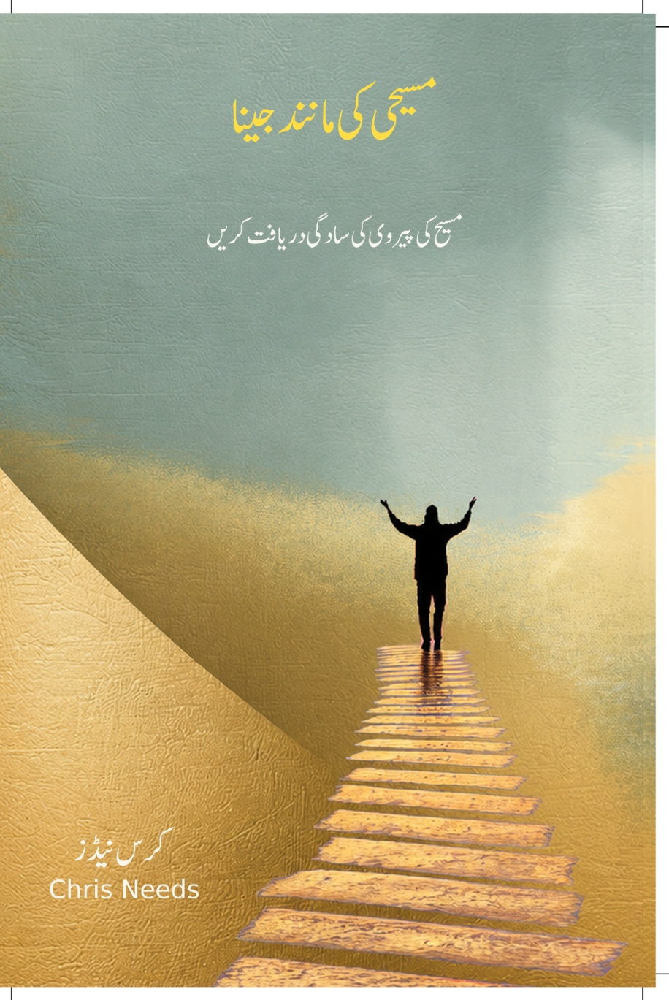
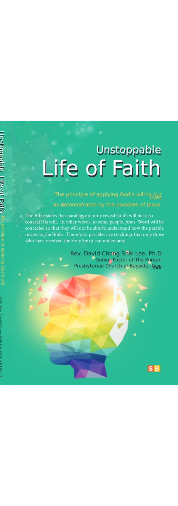
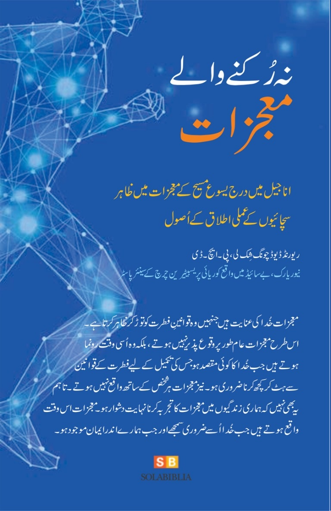
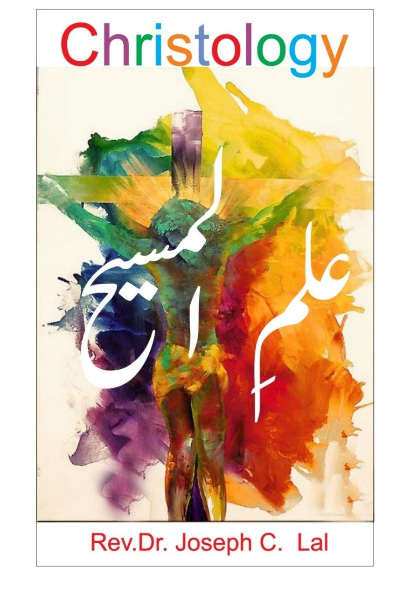

Published

Faithful translations of Christian literature, bringing meaningful books and biblical teaching to Urdu-speaking readers.
Serving Urdu-speaking audiences through faithful translation, publishing, and Urdu-language Christian media.
Urdu Christian Translation & Publishing is dedicated to making meaningful Christian content available to Urdu-speaking audiences through careful and faithful translation.
Our work includes translating Christian books into clear, natural Urdu while preserving the message and theological meaning of the original works. We also translate sermons and podcasts into Urdu, and produce Urdu-dubbed versions of Christian audio and video content.
Through translation, publishing, and Urdu-language media, we seek to serve the Urdu-speaking Christian community and contribute to the availability of quality Christian resources in the Urdu language.
📚 Book Translation
Christian books translated into clear, natural Urdu.
🎙️ Sermon Translation
Christian sermons translated to make biblical teaching accessible in Urdu.
🎧 Podcast Translation
Christian podcasts translated for Urdu-speaking listeners.
🎬 Urdu Dubbing
Christian audio and video content adapted and dubbed into Urdu.
Faithful Translation
Preserving the author's intended meaning and message.
Natural Urdu
Presenting Christian content in clear, readable, and natural Urdu.
Theological Care
Handling Christian terminology and biblical concepts with accuracy and care.
A growing collection of Christian literature translated into Urdu with care and faithfulness.




Translation requires more than replacing words. It requires understanding meaning, context, language, and theology.
We seek to preserve the author's meaning without adding to or removing from the original message.
We aim for Urdu that reads naturally, clearly, and beautifully rather than sounding like a word-for-word translation.
Christian theological terminology is handled carefully and consistently so important concepts retain their intended meaning.
We consider the historical and literary context of the original material so that its meaning is communicated clearly, not merely translated word for word.
We translate sermons and podcasts and produce Urdu-dubbed Christian content while seeking to preserve the message and character of the original.
For questions about our translation work, books, or future projects, please get in touch.
Contact Us